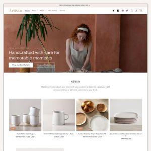
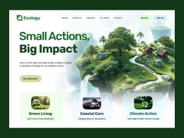
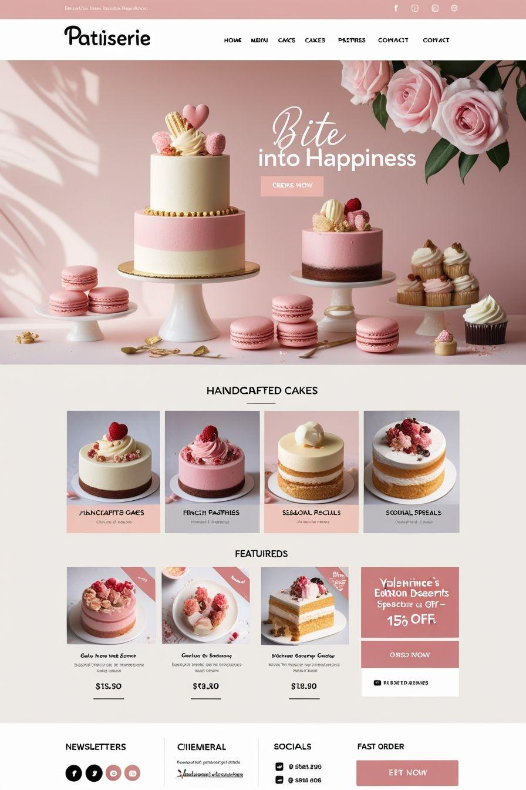
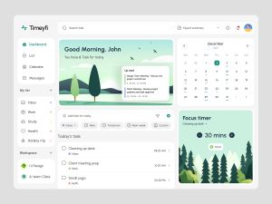

Artesanial — Un espacio para lo hecho a mano

Artesanial es una propuesta de diseño web orientada a emprendimientos artesanales. El proyecto busca
destacar la identidad de cada producto a través de una estética cálida, una presentación ordenada y
una navegación intuitiva.
Durante su desarrollo, trabajé en la estructura del contenido y en la presentación visual, aplicando
los conocimientos adquiridos en HTML y CSS para construir una página clara, atractiva y adaptable a
distintos dispositivos.
EcoConnect — Conectar para cuidar el ambiente

EcoConnect es una propuesta de sitio web que busca acercar la sostenibilidad a la vida cotidiana
mediante una experiencia digital clara y accesible. Su enfoque está puesto en comunicar la
importancia de los hábitos responsables y promover una mayor conciencia sobre el cuidado del
ambiente.
Para este proyecto, trabajé en la organización de las secciones y en la presentación del contenido,
explorando recursos de diseño web para lograr una interfaz coherente, legible y adaptable a
diferentes tamaños de pantalla.
Dolce Momento — Un detalle dulce para cada ocasión

Dolce Momento es una propuesta de sitio web para una pastelería artesanal. Su diseño busca transmitir
calidez y delicadeza, destacando los productos mediante imágenes, categorías y una presentación
visual ordenada.
El objetivo del proyecto es crear una experiencia de navegación sencilla que permita conocer las
especialidades del emprendimiento y encontrar fácilmente la información de contacto.
Durante su desarrollo, se aplican conocimientos de HTML y CSS para organizar el contenido, diseñar
las secciones y adaptar la interfaz a distintos dispositivos.
Planify — Organizá tus ideas, paso a paso

Planify es una propuesta de diseño web orientada a la organización personal y la productividad. La
idea es reunir tareas, objetivos y actividades en una interfaz simple que permita visualizar la
información sin generar distracciones.
El proyecto se enfoca en la jerarquía visual, la distribución de los contenidos y el uso de
componentes para lograr una experiencia ordenada y consistente.
Su desarrollo permite poner en práctica conceptos de HTML, CSS y Bootstrap, explorando el diseño de
tarjetas, la organización de secciones y la adaptación de la interfaz a diferentes tamaños de
pantalla.